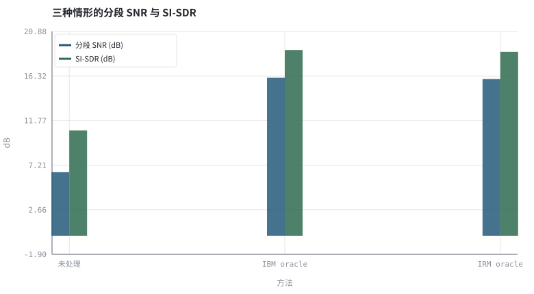
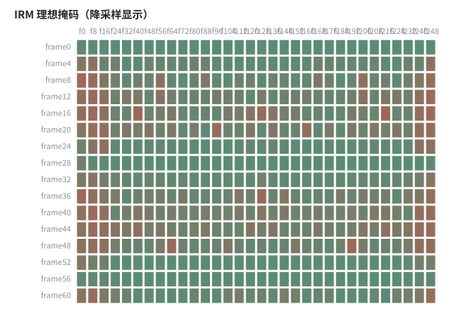

第 19 章时频掩码：IBM / IRM / CRM 与监督学习形式化
下卷的入口：把「算一个增益」改写成「学一个函数」，链路结构一点没变。
本章位置：下卷开篇。第 20 章 · 训练数据合成：RIR、噪声、SNR 配比与数据泄漏 解决「训练数据从哪来」，第 21 章 · 网络骨架：DNN / CRN / U-Net / TCN / Conformer 解决「用什么样的 f_θ」，第 22 章 · 复数域与相位：DCCRN、深度滤波与时域模型 讨论相位，第 23 章 · 神经噪声抑制：从 RNNoise 到 DNS Challenge 回到降噪任务本身。
把 G[t,k] 当成一张待预测的二维表：上卷写死一个函数生成它，下卷训练一个模型生成它。表的形状、下游的逐元素乘法、ISTFT 全都原封不动。
- 能把 3A 的增益估计写成监督学习的输入—输出映射。
- 能推导并计算 IBM、IRM 等理想掩码，说明它们的 oracle 性质。
- 能量化 oracle 掩码的性能上界与可学习性之间的差距。
- 能解释为什么掩码学习仍需遵守因果性与 WOLA 约束。
§知识点地图
每个知识点都配了 1～2 个扩展学习链接；本章完整资源清单见 扩展学习。
| # | 知识点 | 扩展学习 | 状态 |
|---|---|---|---|
| 1 | 监督学习形式化 | Ideal ratio mask / T-F masking ↗ · Microsoft DNS Challenge ↗ | 正文已覆盖 |
| 2 | STFT 特征与标签 | Short-time Fourier transform ↗ · librosa ↗ | 正文已覆盖 |
| 3 | 理想二值掩码 IBM | Ideal ratio mask / T-F masking ↗ · Microsoft DNS Challenge ↗ | 正文已覆盖 |
| 4 | 理想比值掩码 IRM | Ideal ratio mask / T-F masking ↗ · Microsoft DNS Challenge ↗ | 正文已覆盖 |
| 5 | 复数掩码 CRM | Ideal ratio mask / T-F masking ↗ · Microsoft DNS Challenge ↗ | 正文已覆盖 |
| 6 | oracle 上界 | Ideal ratio mask / T-F masking ↗ · Microsoft DNS Challenge ↗ | 正文已覆盖 |
| 7 | 相位保持不变 | DeepFilterNet ↗ · Ideal ratio mask / T-F masking ↗ | 正文已覆盖 |
| 8 | 掩码与谱减的统一 | Spectral subtraction ↗ · ffmpeg afftdn ↗ | 正文已覆盖 |
§19.1同一个位置，换一种求法
传统: G[t,k] = f_手工(P̂_n, P̂_s) ；学习: G[t,k] = f_θ(Y[t−τ:t+τ, ·])
把 第 12 章 · 谱减、过减因子与音乐噪声 的谱减、第 13 章 · Wiener 滤波、先验 SNR 与 MMSE-STSA 的 Wiener 增益统一记成 G[t,k]，上卷用物理假设手工推导 f，下卷用数据拟合 f_θ。输入、输出、指标、链路位置全都不变，变的只是 f 从公式变成网络。
| 掩码 | 定义 | 标签可得吗 | 特点 |
|---|---|---|---|
| IBM | 1 if |S| > |N| else 0 | 需要干净/噪声分离 | 二值，硬判决，易产生音乐噪声 |
| IRM | |S| / (|S| + |N|) | 需要干净/噪声分离 | 软增益，最常作为训练目标 |
| PSM | |S|·cos(Δφ) / |Y| | 需要相位差 | 开始利用相位信息 |
| CRM | S / Y（复数除法） | 需要复数干净谱 | 幅度与相位一起估计，见 第 22 章 · 复数域与相位：DCCRN、深度滤波与时域模型 |
§19.2oracle 不是模型，是上界
上述掩码都要在训练时拿到干净谱，因此只能作为oracle 上界或训练标签。在测试时网络只能看到 Y，性能必然低于 oracle。把 oracle 与可部署模型的差距单独报出来，是论文与工程报告里最有用的一行数字。
- 特征：对数幅度谱、邻近帧上下文、远端参考谱（AEC 场景）。
- 损失：掩码 MSE、SI-SNR、谱幅度距离或感知加权组合（第 26 章 · 联合 3A：多任务、级联与端到端建模）。
- 约束：因果模型只能用
t−τ:t；用了未来帧就是离线结果，不能叫实时。 - 重建：掩码作用在 STFT 上，仍要靠 WOLA 无失真重建（第 02 章 · 采样、量化与时频表示：从 PCM 到 STFT）。
报告里若出现「IRM 提升了 20 dB」，务必注明它是 oracle。常见错误是把 oracle 结果与可部署模型放在同一张表里比较而不加标注。
§Python 实验
实验 19-1 · IBM / IRM oracle 掩码的性能上界与掩码热力图
#!/usr/bin/env python3
# -*- coding: utf-8 -*-
"""计算理想二值掩码与理想比值掩码，量化它们的 oracle 上界并画出时频掩码。
全部语音 / 噪声 / 房间冲激响应均为代码合成信号，仅用于教学演示机制与量级。
"""
from __future__ import annotations
import math
import pathlib
import random
import statistics
import sys
import time
_here = pathlib.Path(__file__).resolve()
for _p in _here.parents:
if (_p / "tools" / "dsp.py").exists():
sys.path.insert(0, str(_p / "tools"))
break
from dsp import (SAMPLE_RATE, fft, hann, stft, istft, magnitude_db, spectrum,
white_noise, tone, chirp, synthetic_speech, rir, convolve,
fft_convolve, delay, clip, normalize_peak, rms, rolling_rms,
smooth, db, energy_db, snr_db, erle_db, seg_snr_db,
scale_align, si_sdr_db, lufs_approx,
write_wav, read_wav, wav_info)
from chart import Chart, heatmap, BLUE, RED, GREEN, AMBER
FIG = _here.parents[1] / "fig"
AUDIO = _here.parents[1] / "audio"
FIG.mkdir(exist_ok=True)
AUDIO.mkdir(exist_ok=True)
random.seed(7)
# ---- 参数区 ----
N = 8000
N_FFT, HOP = 256, 128
NOISE_AMP = 0.040
# ---- 计算与作图 ----
rng = random.Random(7)
clean = synthetic_speech(rng, N)
noise = white_noise(rng, N, NOISE_AMP)
noisy = [clean[i] + noise[i] for i in range(N)]
fs, fn = stft(clean, N_FFT, HOP), stft(noise, N_FFT, HOP)
def apply_mask(kind):
frames = stft(noisy, N_FFT, HOP)
rows = []
for idx, (ry, iy) in enumerate(frames):
rs, is_ = fs[idx]
rn, in_ = fn[idx]
gains = []
for k in range(N_FFT):
ms = math.hypot(rs[k], is_[k])
mn = math.hypot(rn[k], in_[k])
g = (1.0 if ms > mn else 0.0) if kind == "IBM" else ms / (ms + mn + 1e-9)
ry[k] *= g
iy[k] *= g
gains.append(g)
rows.append(gains[::8])
return istft(frames, N_FFT, HOP, N), rows
ibm, _ = apply_mask("IBM")
irm, mask_rows = apply_mask("IRM")
methods = ("未处理", "IBM oracle", "IRM oracle")
signals = (noisy, ibm, irm)
s_snr = [seg_snr_db(clean, scale_align(s, clean)) for s in signals]
s_sdr = [si_sdr_db(s, clean) for s in signals]
c = Chart(FIG / "19-masks.svg", "三种情形的分段 SNR 与 SI-SDR", xlabel="方法", ylabel="dB",
xticks=[(i, m) for i, m in enumerate(methods)])
c.bars(range(3), s_snr, BLUE, label="分段 SNR (dB)")
c.bars(range(3), s_sdr, GREEN, label="SI-SDR (dB)")
print("掩码对比图:", c.save())
mat = mask_rows[::4]
heatmap(FIG / "19-irm.svg", mat,
["frame%d" % (i * 4) for i in range(len(mat))],
["f%d" % (k * 8) for k in range(len(mat[0]))],
title="IRM 理想掩码（降采样显示）", vmin=0.0, vmax=1.0, annotate=False)
print("掩码热力图:", str(FIG / "19-irm.svg"))
write_wav(AUDIO / "19-noisy.wav", normalize_peak(noisy))
write_wav(AUDIO / "19-irm.wav", normalize_peak(irm))
for m, a, b in zip(methods, s_snr, s_sdr):
print("%s: segSNR=%.2f dB SI-SDR=%.2f dB" % (m, a, b))
print("IRM 相对未处理提升=%.2f dB | SAMPLE_RATE=%d N_FFT=%d HOP=%d" %
(s_snr[2] - s_snr[0], SAMPLE_RATE, N_FFT, HOP))操作：对照三个方法的指标；注意 IRM 需要干净谱，测试时不可能直接得到。 预期与判读：两种 oracle 掩码都比未处理高约 9～10 dB；本例中硬判决 IBM 的分段 SNR 与 IRM 接近甚至略高，但 IRM 是连续增益，听感上音乐噪声更轻——客观分数接近不代表主观等价。两者都用到了测试时拿不到的干净谱，是上界而不是模型成绩；第 21 章 · 网络骨架：DNN / CRN / U-Net / TCN / Conformer 与 第 31 章 · 结课项目：小型掩码估计器与全链路验证 会用可训练的小模型去逼近它。
改参数看趋势：把 NOISE_AMP 提到 0.10，oracle 与未处理的差距会进一步拉大。 文件位置：part4/19-tf-mask/code/19-tf-mask.py


19-noisy.wav
带噪输入（16 kHz / 16-bit 单声道，代码合成信号，不是真实录音）
19-irm.wav
IRM oracle 输出（可部署模型的上界）（16 kHz / 16-bit 单声道，代码合成信号，不是真实录音）
代码块右上角可一键复制；仓库里的 code/*.py 由 tools/extract_code.py 从这些代码块自动抽取。脚本只用标准库、固定 random.seed(7)，运行后写出 fig/*.svg 与 audio/*.wav；批量运行用 ./tools/run_python.sh。
§可选真机命令片段
以下命令不参与批量运行，需要本机自行安装对应工具。滤镜是否可用取决于本机 ffmpeg 版本与编译选项，请先用 ffmpeg -filters / ffmpeg -version 自查，并以 https://ffmpeg.org/ffmpeg-filters.html 与各自官方文档为准；本书不假定任何特定版本具备某项能力。
查看 PyTorch 语音工具箱里的 STFT / 掩码接口
python3 -c "import torchaudio; print(torchaudio.__version__)"说明：本机未必安装 torchaudio；这是进阶路径的自查命令，本书实验不依赖它。接口说明见 https://docs.pytorch.org/audio/stable/index.html 。
§本章参考资料
按本章知识点挑选的精读资料；更多检索入口见 扩展学习。
RNNoise 论文（arXiv 1709.08243） ↗
论文A Hybrid DSP/Deep Learning Approach to Real-Time Full-Band Speech Enhancement
推荐理由：从谱增益到可学习频带增益的工业案例
§常见误区
- 把 oracle 掩码分数当成可部署模型的成绩。
- 掩码只作用于前半频谱，破坏共轭对称性。
- 特征里用了未来帧却宣称实时。
- 忘记 WOLA 归一化，ISTFT 边界出现爆音。
§习题与思考
- 推导 IRM 与 Wiener 增益在何种假设下等价。
- 解释为什么 IBM 比 IRM 更容易产生音乐噪声。
- 写出一个因果掩码模型的输入张量形状与时间跨度。
§扩展学习
RNNoise 论文（arXiv 1709.08243） ↗
论文A Hybrid DSP/Deep Learning Approach to Real-Time Full-Band Speech Enhancement
继续检索
- Google Scholar：supervised speech enhancement T-F mask IRM CRM ↗
- arXiv：supervised speech enhancement T-F mask IRM CRM ↗
- GitHub：supervised speech enhancement T-F mask IRM CRM ↗
全书链接总表见 FFmpeg Filters 文档 ↗ 与 附录 A.7；滤镜是否可用请以本机 ffmpeg -filters 为准。